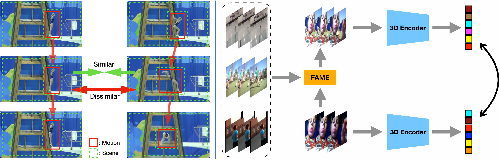
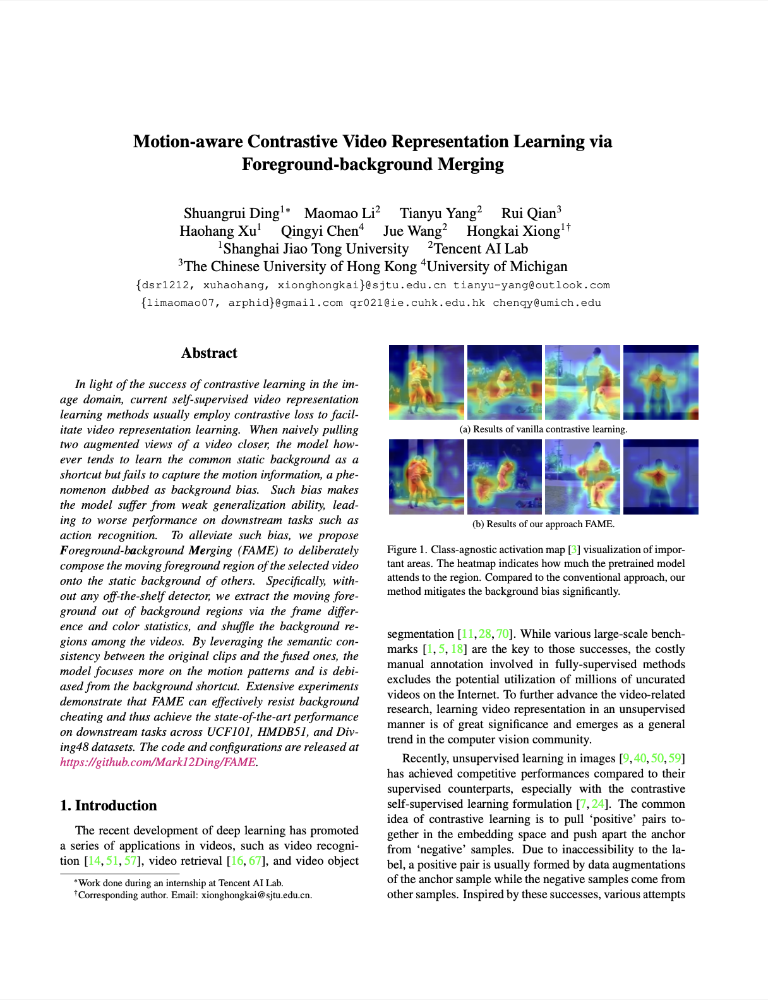

Abstract
In light of the success of contrastive learning in the image domain, current self-supervised video representation learning methods usually employ contrastive loss to facilitate video representation learning. When naively pulling two augmented views of a video closer, the model however tends to learn the common static background as a shortcut but fails to capture the motion information, a phenomenon dubbed as background bias. Such bias makes the model suffer from weak generalization ability, leading to worse performance on downstream tasks such as action recognition. To alleviate such bias, we propose
Foreground-b
ackground
Merging (FAME) to deliberately compose the moving foreground region of the selected video onto the static background of others. Specifically, without any off-the-shelf detector, we extract the moving foreground out of background regions via the frame difference and color statistics, and shuffle the background regions among the videos. By leveraging the semantic consistency between the original clips and the fused ones, the model focuses more on the motion patterns and is debiased from the background shortcut. Extensive experiments demonstrate that FAME can effectively resist background cheating and thus achieve the state-of-the-art performance on downstream tasks across UCF101, HMDB51, and Diving48 datasets. The code and configurations are released at
here.
Publications
|

|
Motion-aware Contrastive Video Representation Learning via Foreground-background Merging.
Shuangrui Ding,
Maomao Li,
Tianyu Yang,
Rui Qian,
Haohang Xu,
Qingyi Chen,
Jue Wang,
Hongkai Xiong
CVPR, 2022
@inproceedings{ding2022motion,
title={Motion-aware Contrastive Video Representation Learning via Foreground-background Merging},
author={Ding, Shuangrui and Li, Maomao and Yang, Tianyu and Qian, Rui and
Xu, Haohang and Chen, Qingyi and Wang, Jue and Xiong, Hongkai},
booktitle={Proceedings of the IEEE/CVF Conference on Computer Vision and Pattern Recognition},
address = {New Orleans, LA, USA},
month = {June},
year={2022}
}
|
Acknowledgements
This work is done when Shuangrui Ding was an intern at Tencet AI Lab and was supported in part by the National Natural Science Foundation of China under Grant 61932022, Grant 61720106001, Grant 61971285, Grant 61831018, Grant 61871267, Grant T2122024, and in part by the Program of Shanghai Science and Technology Innovation Project under Grant 20511100100.
Webpage template modified from Richard Zhang.